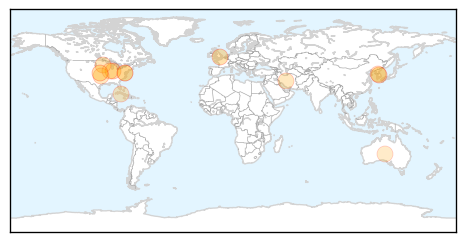

30 Day Trends
Web: 0 alerts, 0 warnings
Twitter: 1 alerts, 0 warnings
Top Articles:
- 0.983
- Asian dog flu hits Chicago
- 0.973
- Dog flu outbreak strikes Midwest
- 0.955
- Glaxo recalls flu vaccine due to potency problem
- 0.942
- 1230 AM Terre Haute, IN
- 0.819
- Legislature working on funding to fight H5N2 - MarshallIndependent.com
- 0.751
- April 18, 2015 Archives
- 0.751
- April 18, 2015 Archives
- 0.751
- April 17, 2015 Archives
- 0.751
- April 17, 2015 Archives
- 0.751
- April 17, 2015 Archives
- 0.751
- April 17, 2015 Archives
- 0.707
- Bird Flu Crosses Species Barrier to Spread Among Dogs
- 0.639
- Cairns health workers refuse free influenza shot
Top Tweets:
-
No tweets found for Apr 18, 2015
Web/News Articles

Tweets

Article Locations
Article Confidences